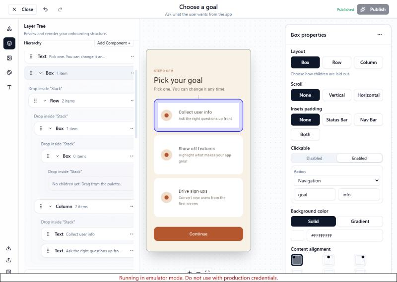
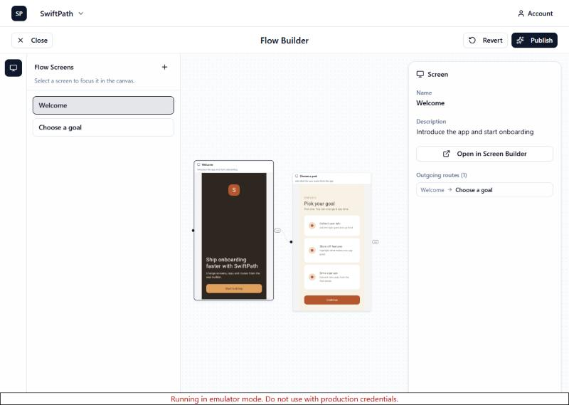

SwiftPath
A server-driven onboarding runtime. Screens, flows, variables and conditions are described as JSON, authored in a web builder and stored in the cloud. A Kotlin Multiplatform app renders them natively on Android and iOS, and in the browser through Wasm.
The JSON lives on Firebase. When the app starts, it sends its project ID and flow ID to a Cloud Function, which reads the flow, its screens, variables and branding from the Realtime Database and returns them in a single response. Because the UI is data, copy, layout and routing can change without shipping an app update. Try it below.
Proof of concept
This phone is a small renderer that only knows component types (column, text, edit_text…). Everything on screen comes from JSON in SwiftPath's real wire format. Switch the "server" from v1 to v2 to see a new design, an extra option and a new step appear with no client change, or edit the JSON yourself.
The web builder
Screens and flows are authored in a Next.js web builder. The preview is the same Kotlin Multiplatform renderer compiled to Wasm, so what you design is exactly what ships. Publishing writes the JSON to Firebase.

